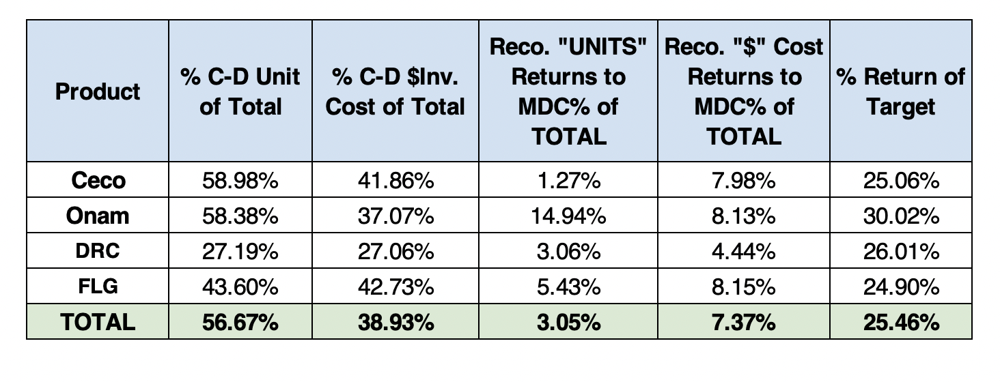
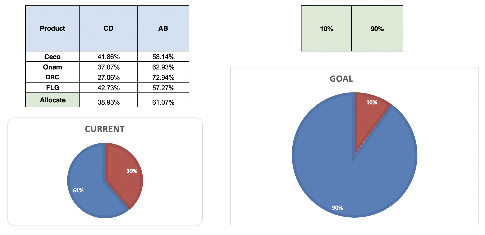
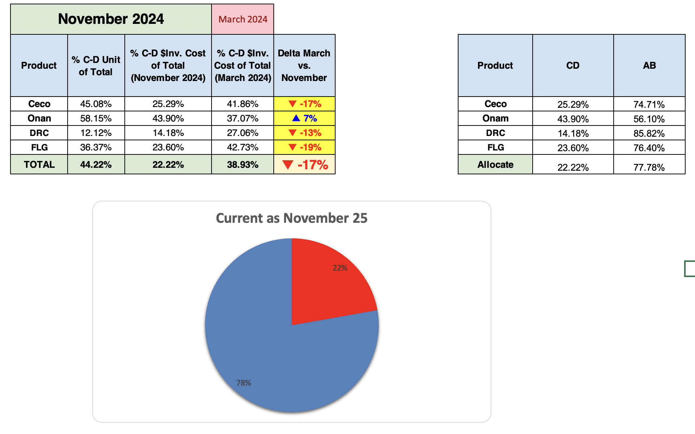

Inventory Optimization Project – Irvine Cummins Parts Warehouse
I managed an inventory optimization project using ABC analysis to improve profitability, reduce holding costs, and increase warehouse efficiency. The project targeted slow-moving C and D class inventory, aiming to shift inventory distribution from 61% AB / 39% CD to a new goal of 90% AB / 10% CD.
Situation
In 2024, our C&D class (slow-moving) inventory accounted for 39% of total stock, limiting space for fast-moving AB items. The objective was to reduce C&D to 10% of inventory value and reallocate space to AB products, improving product availability and sales.
Tasks
- Analyze the entire Irvine CPW inventory database to determine current C and D stock levels.
- Identify and prioritize high-cost, low-sales C&D products for return to the factory.
Actions
-
Developed an interactive Excel dashboard displaying C&D inventory by units on hand and total cost, with a detailed breakdown for the four most important product categories: Ceco, Onam, FLG, and DRC.
-
Created a prioritized return list, focusing on products with the lowest sales over the past 12 months, high-cost items, and those occupying significant warehouse space.
-
Recommended setting target stock levels (TSL) to zero for Class D products, and for Class C products, setting TSL as annual quantity sold ÷ 12 (rounded down) to address overstocking.
-
Proposed returning 25% of slow-moving inventory each quarter, with the dashboard identifying the products — by units and cost — that meet each quarterly target.


This Excel file contains the complete C&D inventory analysis, ABC allocation, and prioritized return plan used to achieve the inventory reduction goals.
Results
Reduced slow-moving inventory from 39% to 22% in just 9 months — an 17% decrease. Freed warehouse space allowed us to stock more AB inventory, improving availability of high-demand products and driving increased sales.
